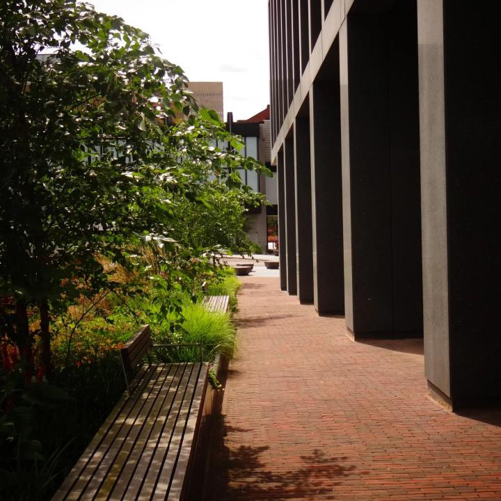

Breath-taking views and scenary.
The peak district
This page has for you the most Breath-taking and gorgeous views of Manchester and its surroundings which includes places like parks, the peak district and greater manchester. Starting with the peak district situated just on the outside of Manchester is a beautiful collection of mountains and hiking trails for a fun and adventurous day out and witness the landscape.
Stunning views of Manchester.
Manchester may look like any other city in the UK however when we have those nice summer days the views you can find around the place are visually and aesthetically amazing and absolutely breath-taking. The nice rural architecture mixed with the beautiful blend of sun makes for a nice family function or hangout with some friends for some nice cold drinks and more.
